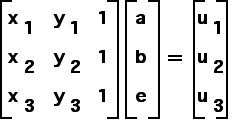
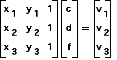

|
|
|  | and |  |
 | and |  |
| The equations | |||||||||
| |||||||||
| can be written in matrix form as | |||||||||
| |||||||||
| Note both equations have the same coefficient matrix, so if that matrix is invertible, the solutions are easy. | |||||||||
| |||||||||
| Here is a proof that the matrix is invertible if and only if the points p1, p2, and p3 are non-collinear. | |||||||||
| Here is the solution. |
Return to Background.